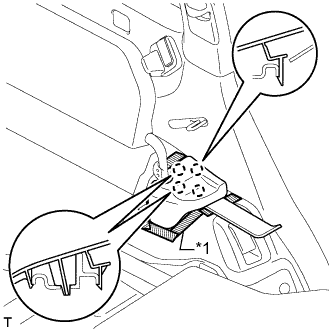
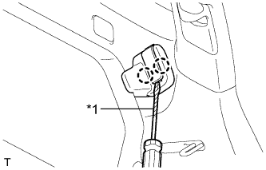
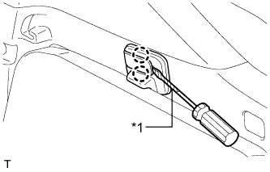
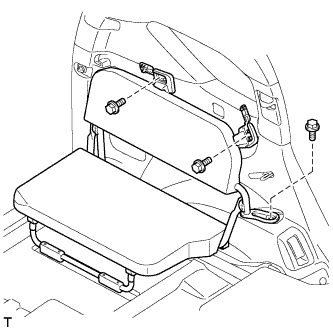
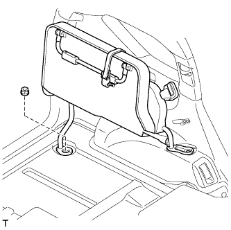

ЗАДНЕЕ СИДЕНЬЕ № 2 В СБОРЕ (для моделей с противоположно расположенными сиденьями) > СНЯТИЕ |
| 1. СНИМИТЕ ЛЕВУЮ БОКОВУЮ НАКЛАДКУ ЗАДНЕГО СИДЕНЬЯ |
|  |
Наклейте защитную ленту вокруг боковой накладки заднего сиденья.
| *1 | Защитная клейкая лента |
С помощью съемника молдингов расцепите 4 захвата и снимите крышку.
| 2. СНИМИТЕ ЛЕВОЕ ЗАДНЕЕ СИДЕНЬЕ № 2 В СБОРЕ |
|  |
С помощью отвертки освободите 2 захвата и откройте крышку.
| *1 | Защитная клейкая лента |
|  |
С помощью отвертки освободите 2 захвата и откройте крышку.
| *1 | Защитная клейкая лента |
|  |
Выверните 3 болта.
|  |
Сложите подушку сиденья.
Закрепите боковой ограничитель заднего сиденья и зафиксируйте подушку сиденья на месте.
Отверните гайку и снимите заднее сиденье № 2 в сборе с автомобиля.